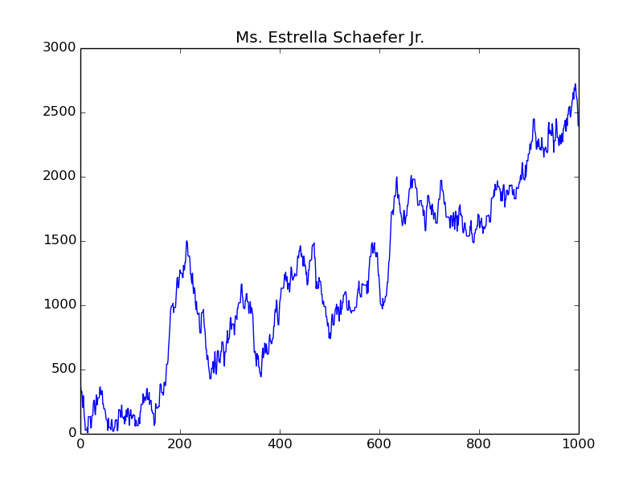
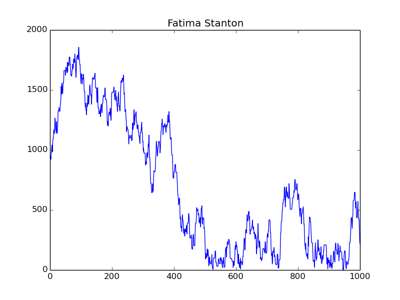
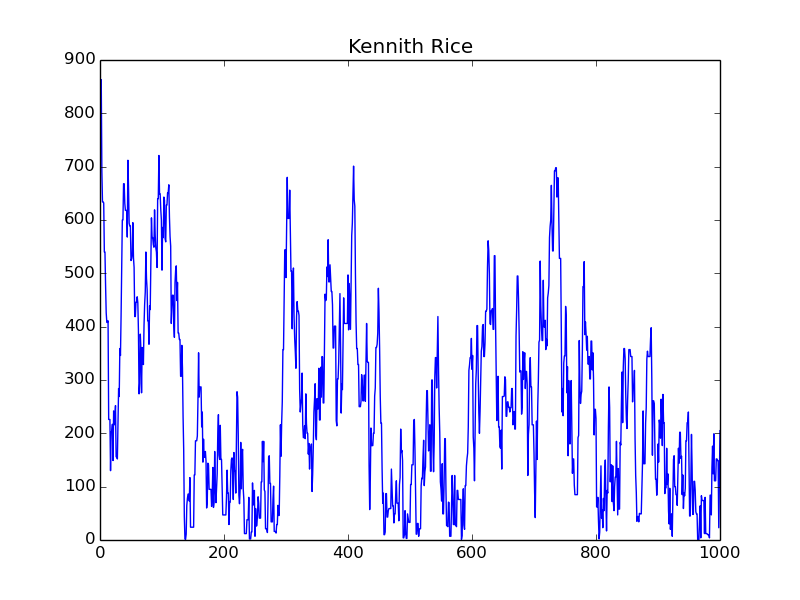

Okulumun ara vermesiyle uzun süredir yazı yazmadığım bloguma kendimi affettirmeye çalışıyorum. Yazdıklarım genelde python, scipy ve matplotlib kullanarak çizimler yapma üzerine oluyor. Gene bu alandan ne yazsam diye düşünürken önümdeki bitcoin piyasası bana eskiden okuduğum bir yazıyı hatırlattı. Burada sanal bir ülke oluşturup içerisindeki kişilere başlangıç olarak bir miktar para veriyordu. Daha sonra birbirleri ile alışveriş yaptırıp paranın nasıl değiştiği inceleniyordu. Bana çok mantıklı ve ilginç gelmişti. Tam buradan yola çıkıp, bu yazıya hiç bakmadan kendi çapımda birşeyler yapayım dedim.
Öncelikle kendime sanal bir ülke oluşturdum ve bu ülke içerisine çeşitli miktarda insanlar yerleştirdim. Daha sonra her kişinin sıra ona gelince bir karar vermesini istedim. Burada vereceği karar ile alış veya satış yapabilir. Kim ile bunu yapacağı gene rastgele olarak belirleniyor. Alışveriş sırasında verilecek veya alınacak olan ücreti de rastgele ayarladım.
Tabi sırası gelen kişi hiçbir şey yapmadan da durabilir. Bu da seçenekler dahilinde. Böylece elindeki parayı korumuş oluyor.
İnsanların başlangıçta belirli bir miktar para ile başlaması gerekiyordu. Ben öncelikle herkese eşit miktar para verdim. Ancak gerçek hayata kimse eşit şartlarda başlamıyor. Kimisi doğuştan zengin, kimisi fakir oluyor. Bu faktör eminim ki hayatının geri kalanını ciddi şekilde etkiliyor. Bu yüzden başlangıç miktarlarını da rastgele atadım.
Şimdi yavaş yavaş bu yaptıklarımı kod parçaları üzerinde göstereyim.
from faker import Faker
import random
fake = Faker()
pop = 100 # total population
mxval = 100 # max value
mnval = 1000 # min value
tu = 1000 # turn
limit = 100 # recursion limit
class Person(object):
def __init__(self):
self.name = fake.name()
self.value = random.choice(range(mxval, mnval))
self.change = False
self.rec = 0
def make_decision(self, person_list):
decision = random.choice([self.nothing, self.sale, self.buy])
from_person = random.choice(person_list)
value = random.choice(range(pop))
if not from_person.change:
decision(from_person, value, person_list)
else:
self.rec += 1
if self.rec > limit:
pass
else:
self.make_decision(person_list)
def sale(self, f, v, person_list):
if f.value - v > 0:
self.value += v
f.value -= v
self.change = True
f.change = True
else:
self.make_decision(person_list)
def buy(self, f, v, person_list):
if self.value - v > 0:
self.value -= v
f.value += v
self.change = True
f.change = True
else:
self.make_decision(person_list)
def nothing(self, f, v, person_list):
self.change = True
self.rec = 0
def clear_change(self):
self.change = False
return self
Person isimli sınıfımızın nesneleri ülkemizin insanlarını oluşturacak. Bu nesnelerin sırası gelince make_decision metodunu çağıracağız. Haliyle asıl işi yapan yer bu fonksiyon. make_decision içerisinde gördüğünüz gibi verilecek olan karar decision değişkeninde, kim ile yapılacağı from_person değişkeninde ve ne kadarlık olacağı value değişkeni ile belirleniyor. Bunların rastgele olarak belirlendiğini görebilirsiniz.
Bu sınıf altında yer alan change değişkeni ise o geçişte sıranın o anki nesneye gelip gelmediği yani daha önce alışveriş yapıp yapmadığını belirlemek için kullanılıyor.
Her kişinin ismini de Faker isimli kütüphane ile oluşturdum. İşin eğlenceli kısmı da bu oldu diyebilirim.
Yukarıdaki kod parçası ile ülkemizi oluşturup, her bir kişinin sıra ona gelince karar vermesini sağlayalım.
my_country = []
person_change_pool = []
for _ in range(pop):
my_country.append(Person())
for i in range(pop):
person_change_pool.append([(my_country[i].name, my_country[i].value)])
Person sınıfından türemiş nesnelerimizi my_country listesinde topluyoruz. Ve daha sonra ilerdeki değişimleri görebilmek adına person_change_pool isimli bir listeye ekliyoruz. Bundan sonra her geçişte kişilerin yeni para miktarları bu değişkende uygun yere eklenecek. Biz de bu sayede paranın nasıl değiştiğini görebileceğiz.
def turn(n):
for _ in range(n):
for i in range(pop):
my_country[i].rec = 0
my_country[i].make_decision(my_country)
person_change_pool[i].append(
(my_country[i].name, my_country[i].value)
)
map(lambda p: p.clear_change(), my_country)
turn(tu)
Üstteki kod parçası ile ülkede yer alan kişileri sırayla seçim yapmaya zorluyoruz. Ve oluşan yeni para miktarlarını person_change_pool listesinde topluyoruz. Kaç geçiş olacağını en baştaki tu değişkeni ile belirlemiştik. Aynı yerde ülkenin nüfusunu, başlangıç para miktar aralığı gibi geneli etkileyen değişkenleride tanımlamıştık. Buralar ile oynayıp sonuçları gözleyebilirsiniz.
Şimdi tüm bu yaptıklarımız sonucunda elimizde ülke nufusunun parayı nasıl kullandığına yönelik bilgiler olacak. Bunları matplotlib ile görselleştirirsek bana göre çok güzel olan bir görüntü elde edeceğiz.
gs = matplotlib.gridspec.GridSpec(10, 10)
gs.update(hspace=1, wspace=1.4)
for i, g in enumerate(gs):
ax = plt.subplot(g)
plot(range(tu+1), [a for _, a in person_change_pool[i]])
plt.title(person_change_pool[i][0][0], fontsize=9)
plt.yticks([])
plt.xticks([])
ylim(0, 2500)
Kodlarımı vim ile yazarken hemen bu şekilde görselleştirme yapabilmek için iPython eklentisi kullanıyorum. Seçtiğim bölgeler CTRL+S ile doğrudan iPython içerisinde tanımlı oluyor. Haliyle bu veriler ile rahatlıkla oynama şansınız oluyor. Yukarıdaki kodumuzun çıktısı aşağıdaki şekilde olacaktır(Faker kütüphanesinin her yeni nesnede farklı isim verdiğine dikkat çekerim).
{kind=link}
Bu resim ile heyecanımız gittikçe artıyor. İnsan inceledikçe farklı sonuçlara doğru yol alıyor. Örneğin ilginç bir eğriye sahip Ms. Estrella Schaefer Jr. kişisinin grafiğine bakalım.

Fakir bir ailede doğduğu belli olan bu kardeşimize hayat hep gülmüş. Belki bu şansı kendisi yarattı bilmiyoruz ancak hayat basamaklarını birbir tırmandığı çok belli. Tüm kişiler arasında en yüksek miktar parala çıkmış olmasıda bir hayli ilginç.

Üst resimde yer alan Fatima Stanton kişisi ise hayata gayet iyi kabul edilecek bir ailede hayata gözlerini açmış. Ancak ileride verdiği kararlar onu yıpratmış ve kendi çöküşünü hazırlamış.

Bu resimde yer alan Kennith Rice isimli kişi ise fakir bir ailede doğup, kendisine bir yol çizmeden babasının izinden gitmiş ve maddi anlamda hep çöküntü içerisinde kalmış.
Resimlere bakıp kahve falı gibi anlatımdan sonra gördüğüm ilginç birkaç sonucu vermek istiyorum. Eğer başlangıçta kişilerin parasını eşit seçersem ne kadar çok işlem yaptırsamda nüfusun ortalama %60 gibi bir kesimi zengin oldu. Burada zenginden kastım başlangıçtaki paranın yarısıdır. Aklıma ilk gelen zenginlik ölçütü o olduğu için öyle seçtim. Bilimsel bir açıklaması yok.
Daha sonra başlangıçtaki paraları belirli iki değer arasında rastgele dağıttığımda ise nüfusun ortalama %60 gibi bir kesimi fakir oldu. Buradaki fakirlik ölçütümde ilki gibi en düşük ile en yüksek değerin ortalaması oldu.
Özetle eğer hayata eşit şartlar altında başlasaydık nüfusun %60 gibi bir kesimi zengin olacaktı. Ama herkes farklı başladığı için bu tam tersi yani nüfusun %60 kesimi fakir oldu. Tabi bunlar benim yarım saatlik eğlencemde ortaya çıkan sonuçlar. Daha bilimsel bir dayanak arıyorsanız bana da ilham veren buradaki yazıyı okuyabilirsiniz. Üstte yer alan kodlara da buradan ulaşabilirsiniz.